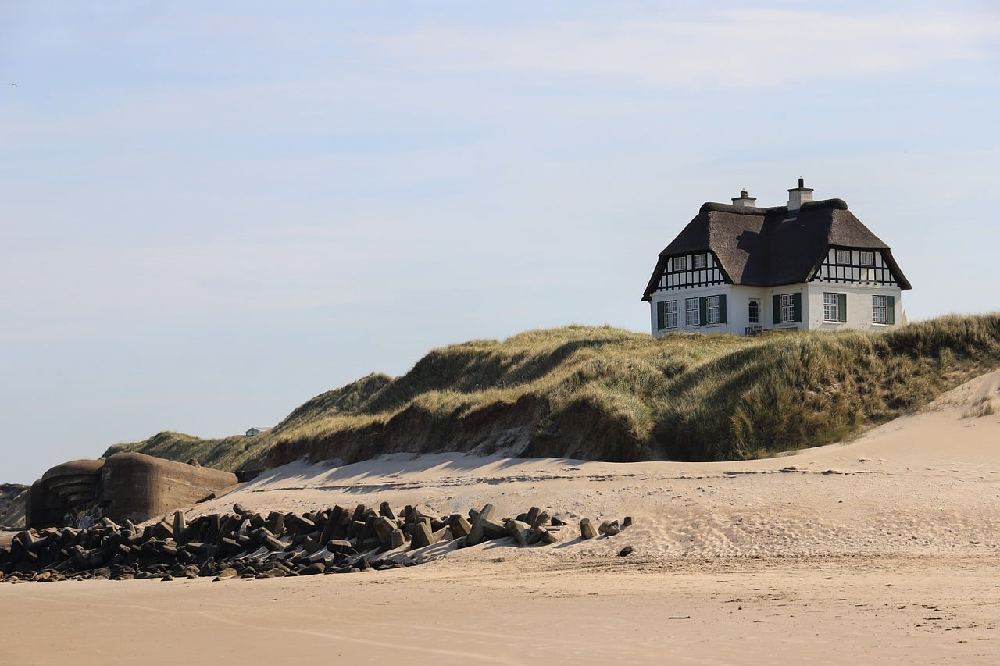
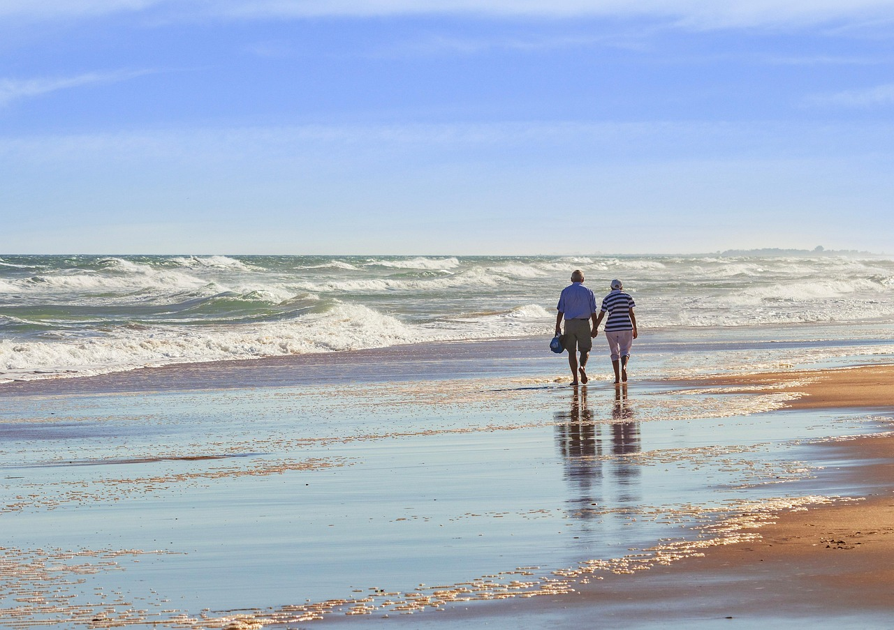
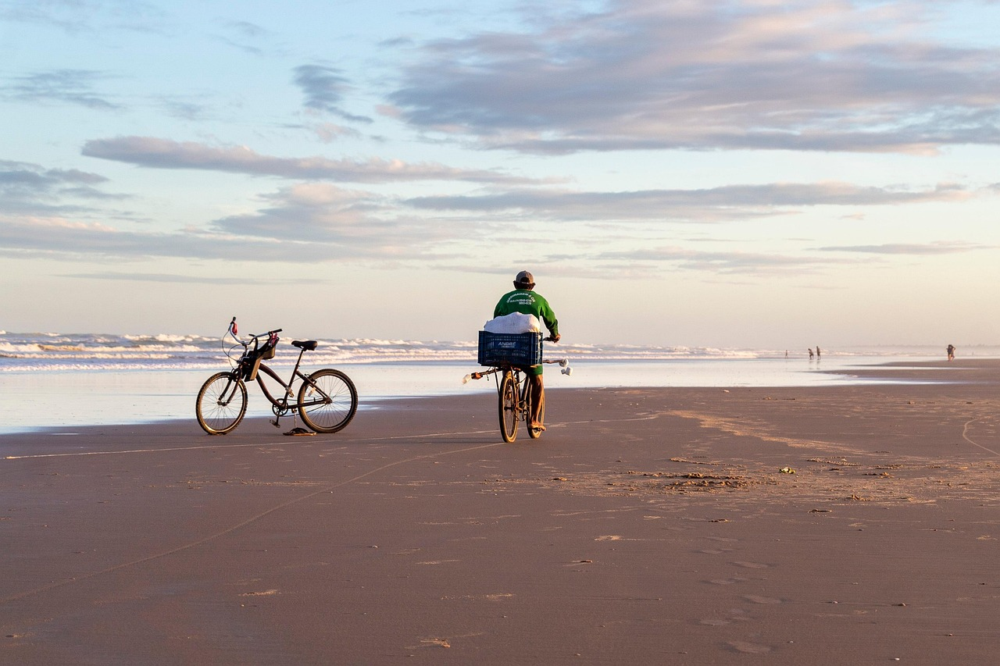
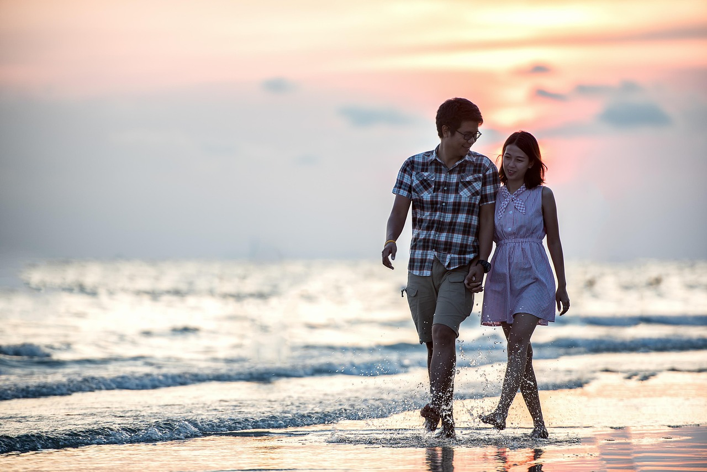

Vila Queen Mary
Strada Dorobanți 36, Constanța
Oaza ta de liniște aproape de mare
Cazare confortabilă în Constanța, la câteva minute de plajă. Camere curate, terasă verde și parcare pentru oaspeți.

O vilă primitoare, cu marea la câțiva pași
La Vila Queen Mary te bucuri de intimitate și confort într-o vilă prietenoasă, potrivită atât pentru familii, cât și pentru cupluri.
Locația te apropie de plajă și de principalele atracții din Constanța, așa că îți petreci timpul la mare, nu pe drum. Atmosfera e relaxată, iar curățenia și ospitalitatea sunt pe primul loc.
-
Aproape de mare
Plaja e la doar câteva minute.
-
Confort sporit
Camere curate și moderne.
-
Parcare sigură
Parcare gratuită pentru oaspeți.

Potrivită pentru familii și pentru cupluri care vor liniște lângă mare.
Zilele tale la Constanța
Plimbări pe malul mării, apusuri pe plajă și seri liniștite, cu vila aproape.


Rezervă-ți camera
Scrie-ne pe WhatsApp sau sună-ne și îți spunem ce camere sunt libere în perioada dorită.
- Adresa
- Strada Dorobanți 36, Constanța
- Telefon
- 0724 971 232